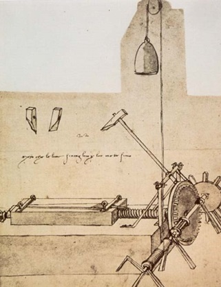
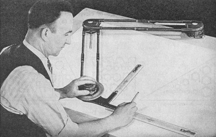
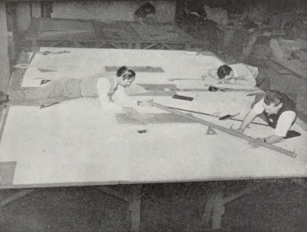

第2章：CAD历史的简要概述
作者注：本章的目的是提供计算机辅助设计（CAD）行业是如何发展的概述，同时尽可能避免在后续章节中重复出现的内容。
引言
我一直被古老的建筑和机械所吸引。例如罗马的竞技场,在我们意识到两千年前的建筑师,没有现今我们使用的建筑设备或设计工具时变得更加令人惊叹。这更像是一种艺术形式，而非传统的工程学，主任建筑师指导着数千人的工作。
今天，罗马竞技场只展示了部分其昔日荣耀。另一方面，中世纪建造的许多壮丽的大教堂和城堡仍然屹立不倒，并且有很多自从最初建造以来就一直在使用。虽然我们有许多早期建筑的例子，但那个时代的机器很少还存在。大多数都是用来攻击敌人城堡的战争机器，并且可能随之毁灭。
多个世纪以来，工程学一直专注于战争，无论是建造防御工事还是攻击这些工事的机器。事实上，第一个非军事工程学科称为“土木”工程，以区别于其军事对应物。在这里，很少有文件描述早期的战争机器是如何建造的。其中一些存在于纸张或被刻在黏土片上的皮革中。
这并不是说这些早期建筑者没有使用草图和图纸。例如，希腊的帕台农神殿不能建造，除非有人仔细计算每一块石头的大小和形状。最可能使用了某种方法来记录这些信息，因为许多人参与了工作。早在15世纪初期，早期的意大利建筑师就已经很好地理解了图像投影的概念。这大约是纸张开始取代皮革作为绘图介质的时候。
描述机器和建筑物的现有工程图纸可以追溯到14和15世纪。这些大多存放在欧洲博物馆和图书馆的装订本中，尤其是南欧，观看它们主要限制于学术研究人员。今天，我们更愿意将它们描述为草图而不是技术图纸。它们没有按比例绘制，也没有尺寸。这些文件中的许多包含详细的文本描述，有助于理解绘画的意图。
早期的工程图纸有两个用途。一方面，它们是有经验的工匠用来建造或建造所描述内容的参考。虽然这些图纸比我们今天熟悉的更具象征性，但这些工匠理解其标志性描述的意图，并不关心缺乏尺寸，因为他们工作的每台机器或建筑都是独一无二的。这些图纸的另一个功能，特别是收藏在作品集中的图纸，是向设计师的赞助人（如王子或富有的商人）展示。

最著名的早期工程图纸之一是列奥纳多·达·芬奇的作品。虽然他以蒙娜丽莎而闻名，但他也是一位军事机器和今天工业机器的先驱的设计师。列奥纳多的设计工作是艺术性的 - 更多的是插图而不是工程图纸。今天我们没有任何他的设计的多视图图纸。但在过去的一个世纪里，熟练的工匠们能够按照他的草图构建出许多他的设计模型。
机械的美丽和智慧让这台切割机变得非常有趣。其操作完全自动化：重物滑动绳索，同时激活锤子的上升下降和零件的进度控制，通过齿轮和杠杆实现。完全的自动化不仅帮助人类，而且能够带来更加均匀的结果，预示着现代生产过程。
——Cianchi, Marco, 《达芬奇的机械》，意大利佛罗伦萨市Largo Liverani的Edizioni Becocci出版社
早期制图实践
早期的工程制图从业者，比如达芬奇，大多数也是艺术家。渐渐地，人们意识到制图应该独立自成体系，需要更高的精度。早期支持这种观点的人是里昂·巴蒂斯塔·阿尔贝蒂（Leon Battista Alberti），他在1435和1436年写了两本书探讨如何在当代制图中加入更多的欧几里得几何概念（Lefèvre，Wolfgang，《机器图像 1400-1700》，麻省理工学院出版社，2004年，第176-5页；Booker，Peter Jeffrey，《工程制图史》，Chatto & Windus出版社，1963年）。他还提出了多视图绘图法，而不是当时通行的单一视图法。
现代工程设计和制图实践可以追溯到描述几何学的发展，特别是由勒内·笛卡尔（1596-1650）和加斯帕尔·蒙日（1746-1818）的工作。工程绘图在18世纪后期开始更快地发展，并随着19世纪的工业革命而加速。
彼得·布克（Peter Booker）在《工程制图史》中很好地区分了欧洲大陆的更技术性实践与英格兰的手工实践。他还深入描述了早期的制图人（其中许多人实际上拥有工程学位）如何使用水彩颜料来突出他们的绘图。这种做法一直延续到20世纪初期。有些令人惊讶的是，现在我们所知道的制图标准直到一战后才被认真对待。这个领域的第一个美国标准直到1935年才获得批准，仅仅比我出生的时间早两年。
在我看来，技术绘图发展的主要催化剂是专利流程的增长。为了获得新设备的专利，必须以特定格式提交绘图。这一过程复杂化了，因为在制图蓝图出现之前，不存在经济复制绘图的方法，而且如果需要多个版本或副本，它们必须手工复制或追踪。约翰·赫歇尔爵士在1840年发现了制图蓝图工艺，并在1876年将其引入美国，但直到后来才被广泛使用。
早期的工程绘图常常是艺术作品。与当代书法类似，这是少数人掌握的技巧。永久绘图通常用墨水完成。初始绘图使用铅笔，T型圆规，三角形，比例尺，不规则（法国）曲线和绘图工具，例如圆规和分度器。早期的制图教材花费了大量篇幅介绍如何削尖铅笔以及如何握笔以获得均匀的线条。
在铅笔素描完成后，会在原始素描上钉上或黏贴一张追踪布。然后使用钢笔和墨水复制每条线条。绘图上的字母特别需要注意。多年以来，引入了各种模板和其他设备，使草图制图员可以生产一致的高质量字母。也许最常用的设备是 Keuffel & Esser 制造的 Leroy Lettering Set。该套件包括几个不同尺寸的模板和一个笔设备，跟随模板字母的形状，并用墨水在图纸上复制该字符。该公司销售不同字体的各种模板。

另一个重大进步是一种称为通用绘图机的设备，如图 2.2 所示。该设备基本上结合了 T 方尺、三角板、比例尺和量角器。它可以使绘图者在任何方向上创建垂直线条。生产商包括 Universal Drafting Machine Company、Frederick Post、Bruning 和 Keuffel & Esser。后两者特别值得关注，因为随后尝试发展售卖中价位系统的 CAD 业务。字母模板和绘图机仍在今天销售，尽管可能很难找到当地经销商。
最终，不同的工程学科发展出了自己的工程设计和制图方法和方法论。建筑师有适用于他们的工作的风格，但与航空工程师使用的风格有很大不同。后者的一个主要问题是需要为飞机的大型部件制作1:1比例的精确图纸，因为将较小的图纸转换为制作这些零件所需的模板是不可能的。图2.3显示了几位工程师和技术人员创建飞机总体布局。

第二次世界大战后的几十年里，绘图设备供应商推出了各种材料，以提高绘图过程的生产率。可以将代表这些项目的贴纸应用于图纸，而不必在图纸上绘制每个细节。随着新一代的复制机的出现，制作例行绘图所需的时间大大缩短。
除了制作工程图纸的困难外，设计过程本身也很复杂，尤其是缺乏计算机设备的情况下更为复杂。我清楚地记得在20世纪50年代晚期的结构工程作业中的一道问题，是一个非常简单的两层楼房 – 或许是三格四列。只用一张纸和一支滑尺，作业就用了整整一个周末完成。我没有学到很多有关结构设计的知识，但我的算术技能得到了很大提升。今天，一个拥有笔记本电脑的学生可以在一个大十倍的建筑物上工作，并通过尝试不同大小的构件和不同的构件组合来学习更多关于好的设计的知识。
计算通常是用滑尺、电动桌式计算器和数学表及工程数据手册进行的。许多技术计算都是用对数完成的，这使得乘除法计算可以通过加减法完成。最流行的手册是由Richard Burington博士于1933年首次出版的，用于进行这些计算。不幸的是，这些手册常常包含小错误。Burington博士的手册被多次重印，每次都带有前一版本的更正。
工程设计过程，包括制作图纸，在错误的机会中充满了机会。结果之一是每个计算和绘图都被检查了多次，特别是当错误的后果可能是灾难性的时候。虽然计算机已经减少了工程设计的大量繁琐工作，但我们知道它们并不完美，如果不适当地进行适当的维护，仍然有可能犯下可怕的错误。
了解技术食物链
计算机行业存在一种现象，与生物食物链相反。在这种情况下，较小水平的技术食物链吸收高水平的能力，而不是像更大的动物一样吃掉连续较小的动物。这种现象解释了我们在性能方面看到的巨大改进以及硬件成本的稳步降低。
那么这一切与设计自动化技术有什么关系呢？人们可以将计算机系统的组件视为类似于食物链的结构。用于CAD应用的系统可能组织如下：
- 培训和系统使用
- 定制应用
- 信息服务
- 标准应用程序
- 应用程序开发工具
- 数据库技术
- 建模和绘图生产
- 图形系统
- 操作系统计算机系统
- 专用扩展板
- 功能特定电路
- 计算机微处理器
在计算机行业中发生的情况是，特定功能不断向下推进。曾经作为应用程序包的一部分必须完成的功能现在在操作系统中完成，曾经在操作系统中完成的功能现在成为基本的计算机处理器的一部分。通常情况下，这将导致更快的性能，因为这些功能将更接近计算机的核心。它还有降低成本的好处。
一个易于理解的例子是浮点运算处理器的发展。30至35年前，大多数小型计算机系统在操作系统中嵌入软件例程来处理浮点运算。需要更高性能的要求促使计算机制造商制造硬件浮点加速器。它们通常是一个小冰箱大小，成本高达20,000美元或更多。早期的工程工作站通常配备卡片式浮点选项，售价几千美元。在20世纪80年代中期，一些半导体制造商开发了单独的芯片或一小组芯片，执行与增加的板相同的浮点运算。这些芯片只需添加到计算机的主板上。在PC世界中，它们被称为数学协处理器。制造成本大大降低，计算机系统供应商轻松地将这些芯片纳入其产品中，并提高了性能。下一步是将浮点函数添加到基本微处理器芯片中。由于数据不必在多个电路板之间甚至在单个电路之间流动，性能得到了提高。对于今天的计算机系统和操作系统来说，浮点运算几乎是透明的。实际上，大多数非技术用户甚至不知道这种功能的存在，因为它已经变得非常普遍。
在技术食物链中，还有许多其他地方的功能已经从一个层次移到较低的层次。图形服务软件就是一个很好的例子。图形服务是处理图形系统中用户交互和在显示屏上显示请求图像的函数。过去，每个CAD系统供应商都投入了大量的开发资源来生产处理这些功能的软件。进行这样做有两个原因。首先，标准软件不容易从硬件供应商处获得，其次，这是软件供应商试图区分其产品与竞争产品的方式。
随着时间的推移，像X-Windows，MOTIF和Open GL这样的行业标准在市场上被接受，工作站和个人电脑供应商开始将这些软件作为其标准操作系统的一部分提供。因此，应用软件供应商调整了其开发策略。他们开始使用标准操作系统功能代替专有软件代码来完成这些任务。通过使用操作系统中集成的标准技术，通常可以替换掉早期专有软件的80％或更多。
以下列出了许多其他示例，可用于解释这个概念，包括图形卡、网络、文件管理软件和打印机支持。在计算机辅助设计（CAD）行业的早期，系统供应商必须花费相当多的精力设计基本的硬件组件和编程基础级别的软件功能。现在的个人电脑内置了所有这些功能，因此CAD软件供应商能够专注于提供增强和更可靠的应用程序。
多年来，程序员花费了相当多的努力来弥补主存储器有限、数据存储设备小、性能低下的缺陷。自第一个商用系统问世以来，变化是惊人的。1972年，Calma等供应商在增加系统主存储器从16KB到24KB的成本上做出艰难的决策。磁盘驱动器通常为5至20MB。而且这必须由通常的四个用户共享。今天，您可以花费约1,000美元购买一个具有2GB内存和250GB硬盘驱动器的个人电脑。成功的公司是那些了解技术变化步伐并专注于未来而不是已经过去的公司。
正如我们将在接下来的章节中看到的那样，许多公司从未理解这些概念或根本无法适应基础技术快速变化的步伐。
计算机开始改变工程实践
第三和第四章提供了有关计算机图形和将计算机应用于设计和制造方面的一些早期发展的详细描述。我的意图不是在此处重复这些信息。相反，我们只是试图将这项开创性工作放置在透彻的视角中。
1940年代中期的早期计算机开发主要是由军事机构提供资金支持，并且这些计算机被用于计算例如弹道轨迹表之类的信息。实际上，“计算机”一词最初用于描述手动进行这些计算的人。十年后，IBM，Sperry-Rand和其他一些公司开始向大型工程组织交付计算机，特别是在国防和汽车工业方面。逐渐地，一些解决工程问题的程序被开发出来。在某些学科领域，例如道路设计，程序可以方便地共享使用，而在其他领域则被视为高度专有。
解决技术问题的典型流程涉及工程师填写一个具有适用数据的编码表格。然后，这些表格将被提交给一个打卡机操作员，该操作员将制作一叠打孔卡片和可能的数据清单。然后，工程师会检查数字清单中是否有错误，如有必要，打卡机操作员会进行更正。然后，卡片堆将被提交给计算机操作调度员，后者将提交要执行的作业。
这些计算机按批处理操作的方式接连运行任务。计算机运行的结果会以数字清单的形式提供给工程师。通常情况下，需要有人仔细绘制结果，以便进行视觉解释。整个过程称为“封闭车间”，对于小问题可能需要一天的时间，对于复杂问题可能需要几周的时间。
20世纪50年代中期，出现了可以由工程部门直接操作的低成本计算机。Librascope LGP-30（Librascope General Purpose）等设备是真空管机器，速度比今天的手持计算器慢，但仍然比手动计算有了显著的进步。输出大多以数字清单的形式呈现，但数字绘图仪从CalComp Computer Products开始出现于1960年。
IBM在1960年推出了非常受欢迎的全固态计算机1620。这台机器的租金约为每月3000美元（当时IBM的大多数计算机都是租赁而不是直接销售），性能低于0.01 MIPS（每秒百万条指令）。尽管从今天的标准来看这个速度非常慢，但它已足以解决许多工程问题。大型主机如IBM System 360 Model 60的租金为每月4万美元，性能约为0.36 MIPS。这些计算机支持双精度浮点运算，因此被用于更复杂的工程分析应用。
内部CAD系统的开发
在20世纪60年代中期，除了在第6章中描述的控制数据Digigraphics系统还销售了很少的几个外，市场上没有商业图形系统。大型制造公司，特别是汽车、国防和航空航天工业逐渐认识到需要利用基于计算机的图形系统来提高工程师和绘图员的生产力。这些公司的一些工作在第3章和第4章中进行了描述。
这项早期工作分为两类。一方面，如雷诺和福特等汽车公司专注于复杂表面的数学定义，而其他公司，如洛克希德加利福尼亚公司则致力于提高绘图的生产力。雷诺的工作最终演变成了达索系统的CATIA，而福特的PDGS软件可能今天仍然有时在使用。洛克希德的工作当然导致了在第13章中描述的CADAM产品的诞生。
这些内部活动的共同点是，这些公司使用大型主机计算机，主要是IBM生产的，而且他们大多使用矢量刷新图形终端。一个关键的硬件发展是IBM System 360产品线的引入，它于1964年4月包括了Model 2250刷新图形终端。在随后的几年里，包括Adage和Spectragraphics在内的一些公司生产了与IBM设备“插拔兼容”的终端，但通常更便宜。除CADAM和CATIA之外，这些内部工作中很少有直接导致成功的商业系统。
商业系统的引入
CAD工业随后在1969年组建了Applicon和Computervision而开始发展。他们在几年内加入了Auto-trol Technology、Calma和M＆S Computing（Intergraph）。这些公司和其他早期行业先驱在后面的章节中描述。
虽然上述内部系统主要使用大型计算机和向量刷新图形终端，但早期商用系统使用了微型计算机，如数字设备PDP-11和Data General Nova1200以及Tektronix储存管显示器。典型系统由16位微型计算机、8KB或16KB主存储器、10MB或20MB磁盘驱动器和一到四个终端组成。大多数系统包括大型数字转换器表、命令输入键盘、坐标输入平板和数字制图仪。当时绘图仪的主要制造商是CalComp、Gerber和Xynetics。
典型系统包含大量的专有硬件。在大多数情况下，这些公司是设备制造商，他们开发了软件来帮助销售其硬件。十五年后，大多数公司正在努力转向软件业务模式，其中使用行业标准的计算机硬件。早期系统主要是面向二维制图，并专注于集成电路和印刷电路板布局。在后一种情况下，艺术品通常是由Gerber Systems生产的光绘仪生成的。
1972年，典型单工位系统售价约为15万美元，每个附加工位约50000美元。这相当于25年后分别为70万美元和23万美元。国内，所有这些公司都通过直销组织销售其系统。除了极少数例外，销售人员全部为男性。在国际上，使用国家分销商。
这些系统主要是以能够降低当前运营成本的基础上销售的。如果你有一个有20名制图员的部门，购买其中一款系统，让它日夜运行，你可能只需要10至12名员工就能完成同样数量的工作。在某些情况下，生产率的提高真的是惊人的，特别是在那些进行很多重复工作的企业内部。大多数早期的系统都具有用户中心的编程语言，有助于开发自动化流程，以生成最少的输入数据为工作制图。
性能经常是一个问题，早期制造商在建立图形界面方面投入了大量的努力，以加快生成显示图像的过程。当一个图形元素从存储管显示中移动或删除时，整个图像必须重新生成。充分的性能需要创新的软件和专门的硬件。
在整个20世纪70年代，CAD行业从几乎为零的状态发展为一个价值十亿美元的硬件和软件业务。新的企业不断加入战斗，但市场仍由前述五家整体解决方案供应商所主导。
几何建模的演变
大学研究在 CAD 行业的演进中发挥了重要作用，其中一个领域是几何建模，无论是曲面建模还是实体建模。最早的 CAD 系统只处理二维数据，模仿传统的绘图实践。从二维到三维的最初转变是使用线框几何——空间中的点和连接这些点的直线。简单地通过线来定义实体和表面的边缘。如果没有其他信息，就无法生成线框对象的阴影图像，也无法在没有手动干预的情况下删除隐藏的线。显然，需要更好的方法。
表面建模技术是由汽车和航空工业推动的，因为手工定义和制造这些车辆的钣金部件正在变得越来越耗时和昂贵。只需要比较 1930 年的方盒子福特 A 型车和 1975 年的雪佛兰 Nova 就可以看出汽车行业的变化。同样，新型喷气式飞机需要光滑的曲线来减少阻力。
钣金部件是通过截面图纸进行手动设计，然后制作模板。这些模板随后由制模师使用，以制作木模型，随后使用铣床复制该模型以机械冲压模具。许多不同的人参与了这个过程，该过程每个环节都存在错误的风险。到了 1960 年代初，数控机床变得越来越普遍，需要一种经济的方法来生成数字信息以驱动这些设备。
早期描述曲面的数学技术之一被称为库恩斯补丁，是斯蒂芬·库恩斯在20世纪60年代中期在麻省理工学院开发的。另一个曲面定义研究的主要中心在法国。早在1958年，保罗·德卡斯泰尔朱在雪铁龙工作时开发了一种数学方法来定义曲面。由于认为这具有竞争优势，雪铁龙直到1974年才披露了他的工作。那时，许多学术和工业研究人员已经开始实施其他技术（贝塞尔，皮埃尔-研究CAD / CAM发展时期的观点-计算历史年鉴20卷，1998年）。
约在1960年，皮埃尔·贝塞尔向雷诺管理层建议公司开发一种数学定义汽车曲面的方法。到1965年，这项工作已经进行得很顺利，到1972年，雷诺正在创建数字模型并使用数据驱动铣床。该公司称该系统为UNISURF，它最终成为达索系统CATIA软件的重要组成部分（见第13章）。该工作的关键是开发著名的贝塞尔曲线和曲面，它们仍在许多图形应用中使用。贝塞尔在其工作中参考了Sergi Bernstein于1911年引入的伯斯坦多项式的早期开发。Riesenfeld，Elaine Cohen，Robin Forest，Charles Lang，Ken Versprille等人的工作使得引入了许多其他定义曲线和曲面的方法。 Coons与伊万·桑德兰一起工作（请参见第3章），桑德兰聚集了一群非常优秀的数学家和程序员，包括Bob Sproul，Danny Cohen，Larry Roberts和Ted Lee。有时在麻省理工学院和哈佛大学所做的工作有些混淆，但可以说，这个小组在几何建模领域的早期理论发展中起着关键作用。
很快，剑桥大学数学实验室的研究生罗宾·福雷斯特加入了他们。在1967年的夏天，库恩斯和福雷斯特开发了一种定义有理三次形式的技术。这在1969年福雷斯特的博士论文中得到了延续，他在其中定义了使用有理三次形式方法描述不同图形实体的方法。
一年后，李在哈佛大学的博士研究扩展了福雷斯特的研究，描述了二次样条曲面。 Coons于1969年移居到雪城大学，成为里奇·里森费尔德的博士论文导师。 Risenfeld于1973年描述了一种称为B样条的新方法。（B样条一词源于基样条，其中伯恩斯坦基是一种特殊情况。）在1970年代，人们在纽约雪城和马萨诸塞剑桥之间不断流动。最终，犹他大学成为这个故事中的一名参与者，当时一些来自哈佛和雪城的人加入了大卫·埃文斯和伊万·萨瑟兰，集中精力于图形应用。当时在雪城的另一位博士研究生是肯·维斯普里，他正在研究有理B样条的定义。他在1975年完成了有关该主题的博士论文，之后加入了Computervision。许多人认为维斯普里是NURBS（非均匀有理B样条）的开发者。雪城的下一步工作是由刘易斯·纳普进行的，他的1979年博士论文也是NURBS演进的一个重要组成部分。另一个步骤是开发后来称为奥斯陆算法的技术。 1979年初，Riesenfeld和他的妻子Elaine Cohen从犹他州到奥斯陆的中央研究所的CAD组工作，与Tom Lyche一起定义了一组数学技术，大大增强了B样条的功能。
一些飞机和汽车公司也在曲面定义技术方面做出了重要工作。波音公司特别活跃于20世纪70年代末80年代初，基于早期学术研究，致力于曲面建模技术的研究。波音公司的主要发展之一是詹姆斯·弗格森（James Ferguson）在三次方曲线和双三次曲面修补方面的工作。波音公司还是IGES（Initial Graphics Exchange Specification）的早期支持者，这是其当时正在进行的CAD系统互操作性工作的一部分。1981年，波音公司提议将NURBS加入IGES，随后在1983年实现。NURBS技术的发展被证明是高级几何建模的关键构建模块之一。正如美国海军学院的教授大卫·罗杰斯（David Rogers）所说：“…有了NURBS，建模系统就可以使用一个内部表示一系列曲线和曲面的范围，从直线和平面到精确的圆和球体，以及复杂的分段雕刻表面。此外，NURBS还允许这些元素轻松嵌入更一般的雕刻表面中。这个NURBS的单一特征是开发强大的建模系统的关键，无论是用于汽车、飞机、船只、鞋子、淋浴洗发水瓶等计算机辅助设计，还是用于最新好莱坞影片中的动画角色……”。
这时需要进行一个关键的观察。许多提高曲面定义技术的工作被学术研究中心所做，通常在广泛可得的期刊上发表。因此，每个研究者都能在先前解决问题的人的工作基础上展开工作。正如在Citroën所发生的，如果这项工作主要由工业公司完成，这种情况可能不会发生。关于这个后者问题，大多数汽车制造商也在进行内部曲面建模应用的工作。他们的主要焦点是从全尺寸粘土模型中取数据点，并将该信息转换为数字表面，以用于机器冲压模具。
从线框和曲面建模到实体建模
这个主题可以很容易地成为一本独立的书籍，在近年来实际上已经写了一些实体建模的书籍。不幸的是，大多数书籍都充斥着只有数学家才欣赏的复杂方程和图表。我的意图是尝试将实体建模的进化用更易读的文字来描述。有趣的是，从事曲面定义技术工作的人和早期的实体建模的支持者之间几乎没有重叠。
一些不同的研究方向最终导致了今天的实体建模技术（特别感谢Rachael Taggart在此部分的帮助以及来自Charles Lang的输入）。其中最重要的之一围绕着位于英国剑桥的CAD Group的活动展开。自20世纪60年代末，该组织的努力导致了CAD行业中可能是最有影响力的一系列创新和发展。基本上，CAD Group创建了三维实体建模软件的基础，这已成为数百家CAD软件公司的技术构建模块，并且今天被全球数百万用户使用。
确定三维实体建模的起源几乎是不可能的。自20世纪60年代后期和70年代初期，全球至少有八个地理位置独立于彼此的区域开始进行实体建模研究。尽管在世界各地进行了活动和研究，但直到1970年代末期才有真正可用的产品，并且直到1980年代末期实体建模才成为商业现实。然而，许多人认为第一款商业产品是MAGI的SynthaVision，该产品使用具有高分辨率渲染的基本实体。SynthaVision于1972年推出，因其在1982年的制作的华特迪士尼制作的电影《电子世界大冒险》中得到广泛使用而闻名。
在1973年于布拉格举行的PROLAMAT会议上，许多地理位置分散的小组初次相遇-并开始讨论这项技术。在该会议上，来自剑桥CAD中心的Ian Braid展示了使用现在称为B-Rep或边界表示技术的BUILD。在同一事件中，来自北海道大学的Professor N. Okino介绍了基于CSG的实体模型程序TIPS-1（CSG或Constructive Solid Geometry使用原始形状（如圆锥体和球体）和这些基本元素的布尔组合来构建实体模型。 B-Rep模型的边界表示使用曲面定义来描述实体的内部）。出席者还包括罗切斯特大学的Herbert Voelcker，他负责管理PADL研究活动，West Berlin大学进行实体建模研究的Spur教授，来自格勒诺布尔大学的J.M Brun博士，他策划了欧几里得（见第21章中的Matra Datavision）和其他在后来推动实体建模繁荣的人。
剑桥的CAD Group参与了这项工作的时间比任何其他组织都长。他们在20世纪70年代开发的技术如今仍在使用（尽管使用了最新的编程技术）。ACIS（请参见Spatial）
团队开发的章节21中的技术目前已在数百万个CAD座位上使用。同一团队还开创了后来的Parasolid，为全世界的另外一百万个CAD座位提供支持。其他立体造型先驱都没有这样的记录。
查尔斯·朗于1960年毕业于剑桥大学工程专业。在英格兰的穆拉德研究公司工作了几年后，朗在1963年以研究生的身份进入麻省理工学院，并与道格·罗斯和史蒂文·库恩斯合作了18个月以上。然后，朗被剑桥大学的莫里斯·威尔克斯教授招募回到计算机实验室。
英国政府为剑桥CAD团队提供了经费和资源，该团队由威尔克斯创建，由朗领导，直到1975年。 1969年，该团队开始使用汇编语言编程在数字PDP-7系统上开发实体建模软件。
“不幸的是，没有人告诉我们这是不可能的，”朗说。“但伊恩·布雷德随后出现了。” - Lang和Braid的引用基于与作者和Rachel Taggart的电话和电子邮件交流（发生在2004年中期）。
1970年，Ian Braid加入了团队，并专注于编写具有特定数据结构的实体建模代码。他的第一篇论文的结果是BUILD1——一种实体建模系统，使用布尔逻辑和简单的实体几何、灰度图像和隐藏线绘图，在PROLOMAT中展示。根据Braid的说法，“BUILD1仅包含专为平面和圆柱形曲面设计的不完整实现。但它展示了如何与计算机中保存的实体模型交互，以及可以通过更改或记录模型、生成图片、查找质量属性或生成切削路径来实现什么。”
Alan Grayer在1970年代初加入了团队，并在1975年为2.5轴铣削机生成NC磁带。“这是第一次从3D模型自动生成NC”，Lang说。剑桥团队经常与雷诺的Pierre Bézier以及与MIT、犹他州和锡拉丘兹的研究人员保持紧密联系。
根据Lang的说法，剑桥CAD组的资金开始在1974年变得不确定，团队成立了一家名为Shape Data的公司。创始人包括Ian Braid、Alan Grayer、Peter Veenman和Charles Lang。Lang说：“公司是没有资金开始的，事实上，我们从来没有真正设定它来赚钱。我们创立它是为了使技术起作用。” Shape Data是剑桥CAD组的第一个分支机构，Lang说自那以后已经有近90个分支机构从计算机实验室产生。Peter Veenman全职加入了该公司，而团队的其他成员则一直留在CAD组直到1980年。
“Shape Data最初的理念是基于与Dave Evans的良好关系-他知道建模比图形更具基础性，他对Evans＆Sutherland成为人们获得构建3D系统所需组件的一站式商店有着远见。” Lang说。
1978年，Shape Data完成了行业第一个商用的实体建模内核-Romulus的发布。1980年，Lang、Braid和Grayer全职加入了Shape Data。然后，在1981年，该公司及其技术被Evans＆Sutherland收购。1985年，Lang、Braid和Grayer离开了公司，成立了三维空间有限公司，但并没有一个特别清晰的想法。几年后，该团队开始致力于新的实体建模器-ACIS。
同时，Shape Data开始着手创建Parasolid-一个实体建模内核，它源自原始Romulus的工作，但使用了更新的技术和技巧。
正如第21章所述，空间技术资助了ACIS的早期开发，该软件最初于1988年发布。同年，Shape Data发布了Parasolid，并被麦克唐纳道格拉斯公司收购。1989年，Parasolid首次在麦克唐纳道格拉斯的Unigraphics软件中使用。
另一个实体建模发展的重要中心是罗彻斯特大学的生产自动化项目（PAP）。PAP成立于1972年，由当时的电气工程教授Herbert Voelcker创立，旨在开发NC机床的自动编程系统。1973年，Ari Requicha加入了该团队。该团队很快将其活动重定向到实体建模，并在CAM-I会议上展示了其第一个系统PADL-1（零件和装配描述语言），并于15个月后公开提供。随后的PADL-2于1981年推出。除了毕业生和本科生，PAP还受益于贷款参与该项目的工业公司的工程师。PADL-1软件最初使用CSG和B-Rep技术的组合。该软件是用FORTRAN的一个派生语言编写的，因此可以很容易地在计算机系统之间移植。罗彻斯特大学以源代码格式将软件许可给大学为1200美元，商业用户为2400美元。许可证持有人几乎对该软件享有无限的权利。在1978年至1985年之间，大学发布了80个许可证。15年后，PADL-1仍然被用作学术机构的教学工具。
PADL-2项目于1979年初启动，Chris Brown担任项目主管。十个工业赞助商和国家科学基金会提供了大约80万美元的资金。旨在能够对90％至95％的非雕刻工业零件进行建模。PADL-2也是为了可移植性原因而用FORTRAN编写的，尽管这限制了开发团队充分利用新兴的面向对象编程技术的能力。 PADL-2最初于1981年中期分发给项目赞助商。尽管像Sandia National Laboratory和Kodak这样的组织在内部应用中广泛使用该软件，但大多数工业赞助商对该软件几乎毫无用处。例外是麦克唐纳-道格拉斯自动化（McDonnell Douglas Automation），该公司从1981年开始基于PADL-2开发UNISOLIDS，并于1982年末在AUTOFACT展示了该软件。 PADL-2的公共发布始于1982年中期。不含重定向软件的许可费用从教育机构的600美元到商业机构的20,000美元不等。希望围绕PADL-2构建商业解决方案的公司将被收取50,000美元的费用，这是最初赞助商支付的同样金额。在1982年至1987年之间，罗切斯特发出了143个许可协议。
1987年，PAP被解散，PADL技术和Voelcker前往康奈尔大学，并在一段时间内继续分发该软件。一个有趣的发展是Cadetron，他们将PADL-2重写为C语言，以在个人电脑上使用。Cadetron随后被Autodesk收购，该软件以AutoSolid的名义营销。
CAD行业的基本结构发生了变化
20世纪80年代是CAD行业发展最重要的时期。该行业开始时由五家公司主导——Applicon、Auto-trol Technology、Calma、Computervision和M&S Computing（Intergraph）。其他开始崭露头角的公司包括McDonnell Douglas Automation、SDRC和IBM，后者在推广Lockheed的CADAM软件。除了SDRC外，只有Computervision和IBM制造自己的计算机，但其他公司则设计和制造相对昂贵的图形终端和其他系统组件。就大多数而言，这些整体解决方案供应商都是生产厂家，恰好出售软件。该行业早期的盈利能力显然与制造利润率有关。
早在1980年，就发生了两个重大变化。其一是从16位小型计算机（例如Digital PDP-11和Data General Nova 1200）转变为32位超小型计算机，例如Digital VAX 11/780。当时，Digital显然占据了计算机市场的这一领域。另一个变化是从Tektronix存储管显示器转变为彩色光栅技术。后者实际上使公司能够制造更多的系统。所有公司都正在对其软件进行重大修订 - 在某些情况下，这些系统需要进行总体重写。
在1980年左右，计算机辅助设计（CAD）系统的售价约为每个座位12.5万美元，相当于今天的30万美元以上。在你意识到现在你可以用不到1万美元的价格购买Autodesk的Inventor Professional软件和一台性能适中的PC时，这是一大笔钱。早期系统通常需要一个带空调的计算机房。即使是基本的操作员培训也需要几周时间，对于大多数系统而言，需要经过六个月甚至更长时间才能恢复到1:1的生产率。
由于这些系统相对昂贵，它们往往以“封闭式店铺”为基础运行。这些系统通常由全职工作于图形控制台的个人操作。工程师和设计师会将工作交给“CAD部门”，然后在几小时或几天后回来接收绘制的输出，他们会仔细检查。标记的图纸会被送回给CAD操作员进行修订，然后再次发送给请求者。很少有情况下，工程师或允许使用系统进行交互式的创意设计工作或与操作员一起工作，来直接响应他们的建议。这些系统的高昂成本通常会导致两个甚至三个班次的操作。
该行业的简短分析
1982年末，总部位于加州山景城的市场研究公司Input为通用汽车准备了CAD行业的深度分析报告。该报告基于与用户和供应商的广泛访谈。虽然我不完全同意他们的发现，但该报告确实突出了当时行业和用户群面临的一些关键问题。缺乏有效的实体建模被认为是制约行业增长的主要障碍。足够的关于该主题的研究已经进行了，吸引了用户的兴趣，但实际可行的解决方案仍然遥远。该报告还强调了应用程序集成或者说，目前缺乏将各种设计和制造应用程序集成在一起的解决方案。将数据库管理工具绑定到应用程序混合中的需求也是一个紧急要求。用户特别需要更可靠的软件。这些问题被受访者认为比易用性和充足的服务和教育更重要。当时正在进行的关键趋势包括向智能工作站、网络化和转向彩色图形。在1982年底，颜色的需求优先级比一年前该公司进行的类似研究要高得多。该报告还确定了当前正在进行的成本大规模转移——硬件变得更便宜，而软件变得更昂贵。
Input的报告没有花太多时间讨论这会对当前一体化系统供应商造成的压力。报告中一部分涉及用户生产力的问题。作者指出，大多数公司仅仅以制图生产力来证明这项技术的必要性，并没有考虑其他生产力要素，包括缩短产品周期和提高产品质量。大多数供应商无法阐述这个问题，被认为是CAD技术市场接受的阻碍（关于计算机辅助设计和制造工程市场的概述，Input，加利福尼亚州山景城，1982年11月）。
工程工作站取代小型计算机
在20世纪80年代，最重要的硬件发展之一就是工程工作站的推出。大多数CAD系统供应商一直在他们的图形终端中实施越来越多的功能，从主机计算机卸载了更多的图形操作功能。工程工作站将这一步进一步，卸载了所有的应用软件执行功能。小型计算机或大型机主机现在只需要文件管理，如果需要的话，很快就会被一个称为服务器的专业工作站所取代。这些设备的另一个关键特点是它们可以组成网络，这样它们可以共享数据甚至计算机程序。
第一个工程工作站供应商是Apollo Computer，由John（Bill）Puduska创立。该公司早期的机器更加面向软件开发，但在签署了像Auto-trol和Calma以及领先的EDA供应商Mentor Graphics这样的OEM客户后，Apollo开始生产具有良好图形能力的系统。这些早期机器使用Motorola 68000微处理器，它们的浮点加速器被缩小到仅仅一个电路板。
基于工作站的CAD系统比旧的基于小型计算机的产品有许多优点。首先，入门成本和每个座位的成本要低得多。价格迅速下降到每个座位约75,000美元，几年后下降到不到50,000美元。此外，性能更可预测。当一家公司有六个或八个终端挂在一个VAX 11/780上，一个用户启动了一个复杂的分析任务，所有其他终端的性能都会受到影响。如果主机计算机失败，所有终端都会失效。有了工程工作站，性能取决于特定用户所做的事情，而不是其他操作员，如果一个工作站失败，其他工作站仍然可操作。
阿波罗工作站整合了大量专有技术，特别是在其操作系统和网络方面。AEGIS操作系统类似于UNIX，但它并不是UNIX。令牌环网是验证过的技术，但它不是Ethernet，后者正迅速成为计算机行业的标准。太阳微系统刚好比阿波罗晚一点，因此能够使用行业标准的UNIX软件和Ethernet组件。不久之后，SGI（Silicon Graphics的简称）加入了这个行列。SGI强调高性能图形，但在其他方面生产的工作站和服务器相对标准。
很快，计算机行业掀起了一场浪潮，出现了大约20多家工程工作站制造商。它们经常被称为JAWS（只是另一个工作站系统）。大多数从未真正起步，很快就消失不见了。主要计算机制造商则是另一回事。IBM、惠普和Digital等公司意识到这些工作站带来的竞争威胁，于是推出了类似的产品。IBM的RS/6000是一个不错的产品，但惠普和Digital在这个领域努力获得动力。Digital从未真正建立起重要的市场份额。惠普通过在1989年收购Apollo来解决这个问题。
正如后面的章节所描述的那样，早期的行业领袖们在向行业标准的工作站硬件过渡和成为更多的软件和服务业务方面遇到了困难。根本问题在于，他们都在制造设施和人员方面做出了重大投资，现在却面临着解决这个业务的问题。这并不容易。像Auto-trol这样的公司试图通过在以前使用的终端配置中重新打包其Apollo工作站来保持制造重心。没有简单的解决方法，这导致了除Intergraph之外的所有早期领导者最终的失败。
与此同时，一群新的供应商获得了重要的市场份额。其中最重要的是IBM与Lockheed的CADAM Inc.合作，后来又与Dassault Systèmes、麦克唐纳道格拉斯自动化（最终演变成UGS）、SDRC以及两个新人Autodesk和Parametric Technology团队合作，它们均在下面进行了描述。
随着CAD系统价格的下降，使用CAD系统的方式也开始发生改变。许多组织继续运营CAD部门，而其他公司则开始将系统分散到设计和制造组织中。设计工程师接受培训，不再向专业CAD操作员提供草图，而是自己完成这项任务。随着软件新版本的推出，用户能够在设计过程中创建图纸，这变得越来越重要。随着公司适应快速发展的技术，设计团队的基本组织结构开始发生变化。
个人电脑成为新的变量
到1987年，传统CAD系统供应商已经销售了约10万个软件许可和相应的设备来支持这些用户。这花费了他们17年的时间。在仅仅五年时间里，新的个人电脑软件供应商安装了同样数量的软件许可（Machover，Carl，MicroCAD Trends – 1980/1990，《第四届微型CAD国际论坛》，1987年9月23日，北卡罗来纳州立大学）。今天，有数百万CAD用户，绝大多数在个人电脑上工作。
实际上，个人电脑早在上述工作站之前就已经存在。早期的机器更像是给计算机发烧友的组件集合，而不是严肃的技术工具。这种情况开始在1981年8月改变，IBM推出了其第一款个人电脑Model 5150，搭载16KB的内存，一个字母数字显示器和无硬盘驱动器。但它只卖1995美元。IBM的关键决策是使用英特尔微处理器，一个4.7 MHz 8088，以及来自西雅图的一个小公司微软的新操作系统。正如人们熟知的那句话一样，其他的就是历史了。
IBM兼容机花了一些时间才有了足够的性能和图形能力来处理CAD软件。最初，像T＆W系统（见第20章）这样的少数公司提供的PC软件与类似价格的计算机（如Apple II）或更昂贵的计算机（如Terak 8510）一起工作。人们还尝试着使用一些自定义系统。在创建Autodesk之前，John Walker和Dan Drake使用德州仪器的9900微处理器构建了PC，并且Mike Riddle提供了使用Digital Research的CP / M操作系统的一些软件。
在接下来的几年中，英特尔推出了一系列功能越来越强大的微处理器和数学协处理器，第三方供应商开始提供可以由代理商甚至技术娴熟的用户插入PC的图形加速器卡。 1983年，Autodesk售出了近1000份价值约100万美元的AutoCAD拷贝。有一些问题分离了PC CAD市场和那些大厂商的市场，这些大厂商大多正在从系统制造商转变为销售行业标准工作站和软件。
- 概念是以20％的成本销售大型系统80％的功能。现实情况是，早期的AutoCAD和VersaCAD等软件版本的功能在显然少于Computervision的CADDS4，Intergraph的IGDS或Autotrol的Series 5000的80％。
- PC软件供应商没有试图独立完成所有工作。鼓励第三方软件供应商向产品中添加应用功能，而遗留的供应商则通过控制与其系统一起使用的关键编程工具的访问来阻止这样的活动。
- 这是一家仅提供软件的企业。
- 软件通过销售硬件和提供培训服务的经销商售出。
- 用户打电话给经销商寻求技术支持，而不是软件供应商。
在 1980 年代中期，全方位提供解决方案的供应商将 PC 市场视为他们希望消失的东西。他们的销售人员淡化了 PC 的能力，继续推销自己的“大型企业解决方案”。到 1986 年，Autodesk 的年收入已超过 5000 万美元，并且这些公司终于意识到他们面临的竞争。
大的供应商采取了两种方法，一些将他们软件的子集移植到了PC上，另一些则创建了自己的AutoCAD替代品，而其他一些则向PC上添加了UNIX协处理器，并试图使用他们在工程工作站上运行的相同软件。在所有的情况下，这些都被认为是公司主流系统的次要产品。
一个重要的转折点发生在1993年中期，当时微软推出了Windows NT。这使得支持同一软件的UNIX和Windows版本变得容易得多，并且很快所有的供应商都提供了Windows NT版本的软件。尽管大多数公司无论软件运行在UNIX工作站上还是Windows NT PC上都收取相同的费用，但典型PC系统的硬件部分不到工程工作站的一半。
PC仍然处于性能劣势，但差距正在迅速缩小，特别是在英特尔于1995年中期推出Pentium微处理器后。在接下来的十年里，PC成为了大多数CAD用户的主要平台，而UNIX工作站则被限制在专业应用程序中。现在，PC性能已经不再是一个问题了。在12年内，Pentium的时钟速度从133 MHz提高到了将近4.0 GHz，典型内存从256KB增加到了1GB以上，图形性能超过了1995年售价超过10万美元的工作站。所有这些只需要几千美元。
未来可以期望更高的性能。到2006年底，一些PC已经配备了包含双重或四重计算元素的微处理器。未来几年将有8个、16个或更多处理元素的芯片。当然，CAD软件必须适应这种先进的处理能力。
转向基于特征的参数化设计
Parametric Technology Corporation（见第16章）在1987年末推出了一个名为Pro/ENGINEER的基于特征的参数建模软件，从而震撼了CAD行业。虽然该软件存在一些技术缺陷，但它表现得特别出色，许多公司开始进行试点安装，以将这种新技术与当时大多数使用的现有传统系统进行比较。除了达索系统和SDRC外，PTC的竞争对手都在经历摆脱制造和/或市场营销计算机硬件的困难转型。出乎意料的是，如果要保留现有客户，他们必须同时面临重大的软件变革。
虽然PTC不一定发明了Pro/ENGINEER中涵盖的所有概念，但他们在打包和推广技术方面做得非常出色。相当快地，该公司开始从其他供应商那里夺取业务，特别是Computervision。在接下来的五六年里，PTC的竞争对手在不同程度上将基于特征的设计和参数化功能添加到其主流软件包中。 UGS、SDRC和达索在过渡方面做得非常好，而Applicon、Computervision和Auto-trol Technology很快就消失了。最终，即使SDRC也无法成为一个独立的公司，被UGS收购了。
中档系统的出现
随着PC逐渐成为首选的CAD平台，一代新的CAD系统开始崛起。常常被称为中档系统以区别于早期的遗留系统，它们比旧系统具有多个优势。这些软件是由像SolidWorks（见第18章）这样的新创企业和像Computervision和Intergraph这样的老牌公司开发的。中档系统在底层技术和市场推广方面都与旧系统有所不同。
- 这些系统只能在运行Windows的PC上执行。
- 它们使用组件软件技术，特别是几何建模和约束管理。
- 他们聚焦于设计，次要关注制图，并把数控和分析等领域留给第三方合作伙伴。
- 类似于基于PC的系统，这些中档系统主要由经销商销售。不同之处在于供应商提供更多的技术支持。
- 典型的软件价格在每个用户3,000美元到6,000美元之间，约为中90年代完全功能系统价格的四分之一。
随着时间的推移，中档系统已经与完全功能系统有所融合，但仍存在一些显著区别。达索收购了SolidWorks，UGS收购了Intergraph的Solid Edge业务单元。Autodesk推出了Inventor，而PTC重新包装了Pro/ENGINEER以更具竞争力地进入这一领域。
今天我们在哪里
正如后续章节所解释的，从1990年代中期开始，重要的产业整合事件一直在发生，并且延续到了目前阶段。主要供应商现在认为他们提供的不仅仅是CAD和文档管理。目前描述整个行业的术语是产品生命周期管理（PLM）。仅仅涉及软件的PLM行业价值超过100亿美元，而使用这些工具的用户数量也达到了数百万。它彻底改变了工程设计的实践方式，并且成为了过去十年中工业生产力提高的主要因素之一。
非常简单地说，在发达国家，几乎没有任何产品、建筑、电子组件或系统或工厂是不使用这种技术进行设计的。它使得产品更加可靠，生产成本更低，并且更具吸引力。它改变了技术教育，对众多职业的实践方式产生了重大影响。设计工程师现在可以进行以前只能由高度专业的专业人员完成的分析。另一方面，随着新一代设计程序将绘图作为设计过程的副产品生成，制图作为一项职业正在迅速消失，在许多情况下，新的设计只需极少或根本不需要绘图即可投入生产。
过去，实施新软件技术和现有计算机性能之间存在持续的斗争。但近年来，低成本计算机的表现已经爆炸性增长。在过去40年中，可用系统的价格/性能比已经提高了一百万倍，而且没有迹象表明这种趋势会放缓。软件变得更加强大-今天几乎没有无法轻松处理的设计问题。
主要问题仍然是将该技术应用于日益复杂的项目。这意味着管理大量的设计数据，一些公司做得很好，而其他公司则面临困难。空客公司因其德国和法国业务之间的数据不兼容问题而推迟了A380超大型飞机的推出多年。与此同时，波音公司的787 Dreamliner的推出保持在计划之中，尽管其设计和制造分散在世界各地。归根结底，计算机辅助设计是一种令人惊叹的技术，正在彻底改变工程设计和制造，特别是在使用正确的情况下。